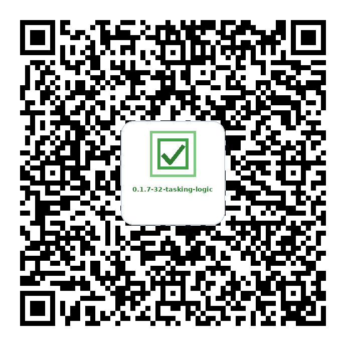

1
Create & Customize Your Task Pool
Your task pool is managed directly in a Google Sheet:
- Open the Template: Click MicroTasking Google Sheet Template to open it in your browser.
- Make Your Copy: In Google Sheets, tap File → Make a copy to save an editable copy to your Google Drive.
- Categories = Tabs: Each tab at the bottom represents a category (e.g. Cleaning, Decluttering, Admin). Add, rename, or remove tabs as you wish.
- Tasks & Checkboxes: Add your tasks into the spreadsheet. Use the checkbox in Column A to enable or disable individual tasks. (Category-level toggles can also be managed directly in the app!)
2
Install & Launch the App Android Only
-
Scan or Download: Point your phone's camera at the QR code below, or click the direct download link if viewing this page on your phone:
tasking-logic

Download MicroTasking APK (v0.1.7-32-tasking-logic)
Open the download again -
Allow Sideloading (First Time Only):
- After tapping Download anyway, open your browser's Downloads list or the Android Files app and tap the downloaded
.apkfile. The browser may not open the installer automatically. - If Android displays "For your security, your phone is not allowed to install unknown apps from this source", tap Settings, toggle Allow from this source to ON, then go back and tap Install.
- If Google Play Protect displays a warning, tap More details → Install anyway.
- After tapping Download anyway, open your browser's Downloads list or the Android Files app and tap the downloaded
- Launch & Grant Permissions: Open MicroTasking from your home screen. When prompted, grant Notifications and Exact Alarms / Display over other apps permissions so full-screen prompt takeovers can wake your screen.
3
Generate Your Sheet's QR Code
Instead of typing a long URL on your phone keyboard, generate a QR code right here:
- In your copied Google Sheet, make sure sharing is set to "Anyone with the link can view" (tap Share → Anyone with the link).
- Copy your Google Sheet URL from your browser bar.
- Paste your URL into the box below:
4
Scan & Sync in MicroTasking
- Open the MicroTasking app on your Android phone.
- Tap the Settings (gear icon) in the top corner.
- Select Import External Task Pool.
- Tap Scan QR Code and scan the QR code generated in Step 3 above.
You're all set! MicroTasking will now automatically sync your categories and tasks.